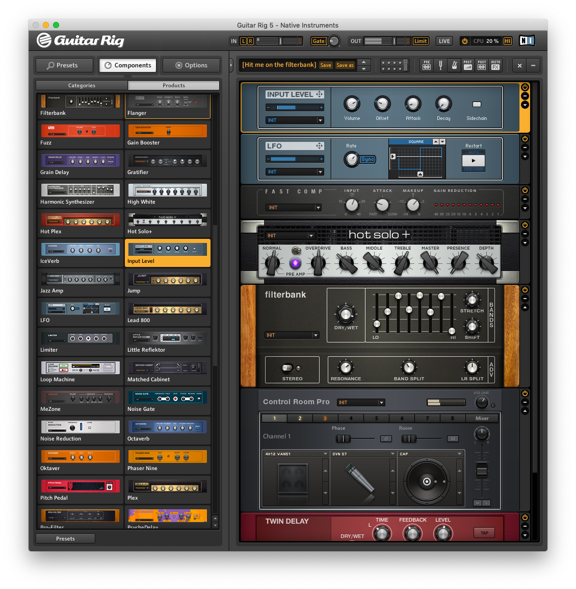

Setup for Audio Inteface with Guitar Rig 5 on macOS Mojave
Had some trouble setting up Guitar Rig 5 on macOS Mojave the other day. Listening back the guitar output not straightforward: although the signals seemed to be sent from my guitar to the audio interface, and from the interface to Guitar Rig, somehow it’d still not work. Guitar Rig 5 seems not to get it right by itself. This how I’ve fixed it.
macOS Mojave Version 10.10.14
Guitar Rig Pro 5.2.2
Audio Interface Steinberg UR22mkII
Audio MIDI setup
Instead of using my audio interface as the input and output device on Guitar Rig, I had to use an “aggregate device”. This is how you can do it too.
-
Open “Audio MIDI setup” in your Mac. (It’s a tiny secret sound manager shipped along with the system, you’ll find it.)
-
At the very bottom of the app, there is a small + (“plus”) button wherein you should select “Create an aggregate device”.
-
Set up your “aggregate device” with your 1) audio inteface and 2) speakers/headphones/whatever – which should be all shown up there, given the setup is correct. Remember to give your device a remarkable name – I suggest FUCK COMPUTERS AND AUDIO BOTH NEVER WORK, or something more chill.
- Go back to Guitar Rig. In the context menu “File”, go to “Audio and MIDI Settings”. In the “Audio” tab, select your aggregate device as the device, instead of only the audio interface as you were doing before; then configure input/output as expected in the “Routing” tab.
Should work! If it doesn’t, this guide by Native Instruments on how to troubleshoot audio and others guides on the website might help. Depending on your audio interface, make sure the right driver setup is in place – you can try out ASIO4ALL.
If it still doesn’t work, I am sorry and prolly have no idea. Have fun.